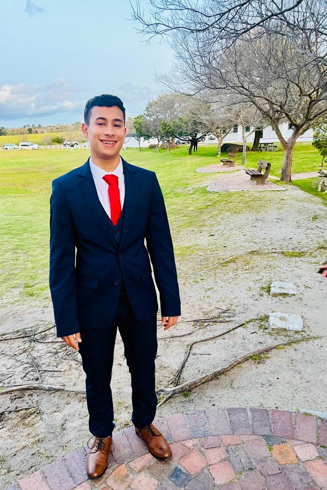

BSc Cyber Security student at Nottingham Trent University, seeking a placement year in technology.
During my first year, I gained valuable experience at Eventim UK. I generated over 1,700 qualified B2B leads for the events industry, managed data across Salesforce CRM and collaborated with my sales team on pipeline growth. I took part in an international sales meeting which involved teams from seven different countries. I gained exposure to performance analysis, market trends and global planning.
Alongside this, I led a team of five in a university Systems Analysis and Design project. I coordinated requirements gathering, planned, organised and delegated and ensured deadlines were met. I have also completed the Telstra Cyber Security Virtual experience, applying structured problem-solving to a real incident response scenario.
I understand that technology roles require more than technical ability. My experience in commercial environments, team leadership and academic projects has given me an early understanding of how organisations operate, identify opportunities and make decisions.
I am open to placement opportunities in Cyber Security, Software Development, Technology Consulting, Solutions Architecture and Business Analysis.
GitHub: traviscoenraad.github
LinkedIn: Travis Coenraad
